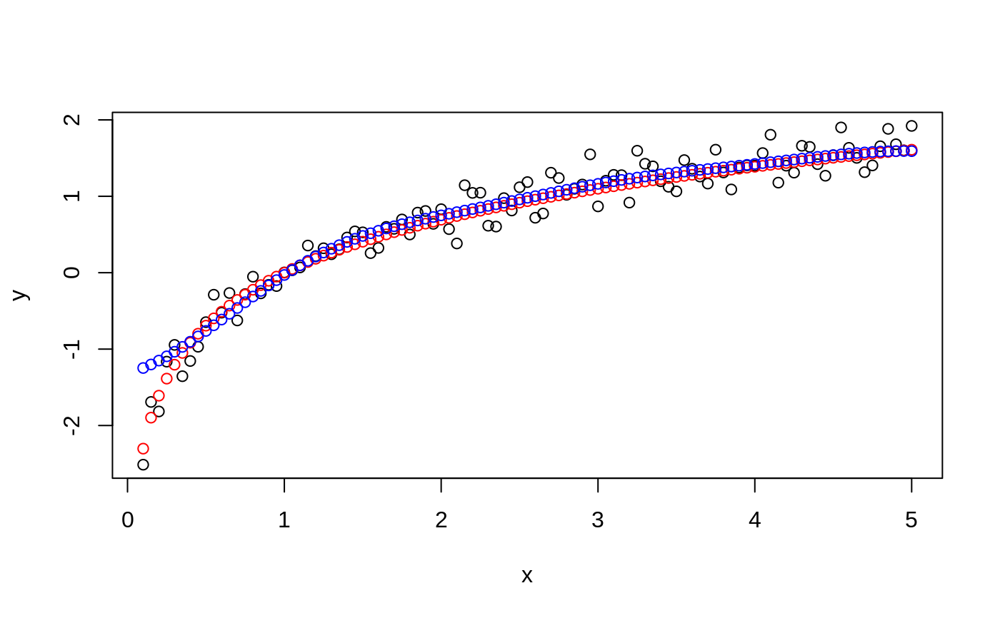
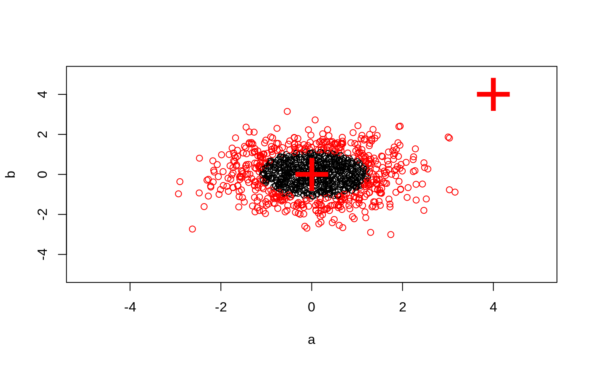

predict.svm.RdThis function predicts values based upon a model trained by svm.
# S3 method for svm predict(object, newdata, decision.values = FALSE, probability = FALSE, ..., na.action = na.omit)
| object | Object of class |
|---|---|
| newdata | An object containing the new input data: either a
matrix or a sparse matrix (object of class
|
| decision.values | Logical controlling whether the decision values of all binary classifiers computed in multiclass classification shall be computed and returned. |
| probability | Logical indicating whether class probabilities
should be computed and returned. Only possible if the model was
fitted with the |
| na.action | A function to specify the action to be taken if ‘NA’s are
found. The default action is |
| ... | Currently not used. |
A vector of predicted values (for classification: a vector of labels, for density
estimation: a logical vector). If decision.value is
TRUE, the vector gets a "decision.values" attribute
containing a n x c matrix (n number of predicted values, c number of
classifiers) of all c binary classifiers' decision values. There are k
* (k - 1) / 2 classifiers (k number of classes). The colnames of
the matrix indicate the labels of the two classes. If probability is
TRUE, the vector gets a "probabilities" attribute
containing a n x k matrix (n number of predicted values, k number of
classes) of the class probabilities.
If the training set was scaled by svm (done by default), the
new data is scaled accordingly using scale and center of
the training data.
data(iris) attach(iris) ## classification mode # default with factor response: model <- svm(Species ~ ., data = iris) # alternatively the traditional interface: x <- subset(iris, select = -Species) y <- Species model <- svm(x, y, probability = TRUE) print(model)#> #> Call: #> svm.default(x = x, y = y, probability = TRUE) #> #> #> Parameters: #> SVM-Type: C-classification #> SVM-Kernel: radial #> cost: 1 #> #> Number of Support Vectors: 51 #>summary(model)#> #> Call: #> svm.default(x = x, y = y, probability = TRUE) #> #> #> Parameters: #> SVM-Type: C-classification #> SVM-Kernel: radial #> cost: 1 #> #> Number of Support Vectors: 51 #> #> ( 8 22 21 ) #> #> #> Number of Classes: 3 #> #> Levels: #> setosa versicolor virginica #> #> #># test with train data pred <- predict(model, x) # (same as:) pred <- fitted(model) # compute decision values and probabilites pred <- predict(model, x, decision.values = TRUE, probability = TRUE) attr(pred, "decision.values")[1:4,]#> setosa/versicolor setosa/virginica versicolor/virginica #> 1 1.196152 1.091757 0.6708810 #> 2 1.064621 1.056185 0.8483518 #> 3 1.180842 1.074542 0.6439798 #> 4 1.110699 1.053012 0.6782041#> setosa versicolor virginica #> 1 0.9801541 0.01125120 0.008594704 #> 2 0.9727793 0.01797378 0.009246880 #> 3 0.9788529 0.01187319 0.009273890 #> 4 0.9748150 0.01522530 0.009959694## try regression mode on two dimensions # create data x <- seq(0.1, 5, by = 0.05) y <- log(x) + rnorm(x, sd = 0.2) # estimate model and predict input values m <- svm(x, y) new <- predict(m, x) # visualize plot (x, y)## density-estimation # create 2-dim. normal with rho=0: X <- data.frame(a = rnorm(1000), b = rnorm(1000)) attach(X) # traditional way: m <- svm(X, gamma = 0.1) # formula interface: m <- svm(~., data = X, gamma = 0.1) # or: m <- svm(~ a + b, gamma = 0.1) # test: newdata <- data.frame(a = c(0, 4), b = c(0, 4)) predict (m, newdata)#> 1 2 #> TRUE FALSE